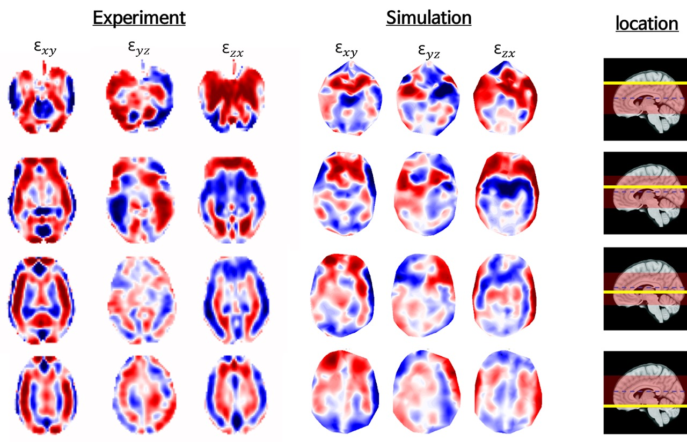
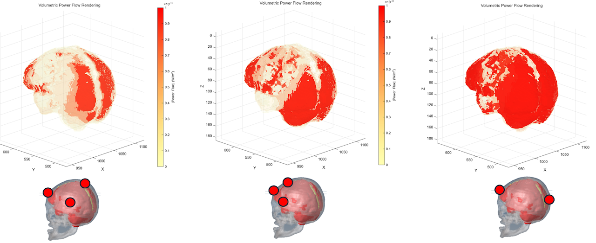
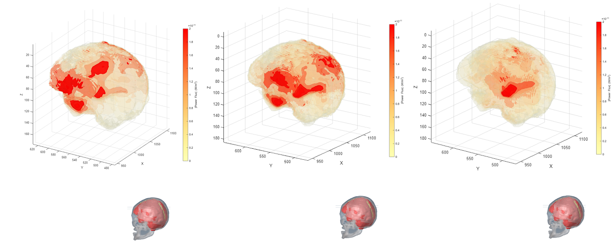
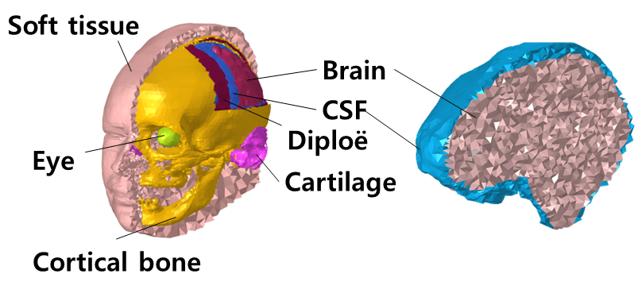
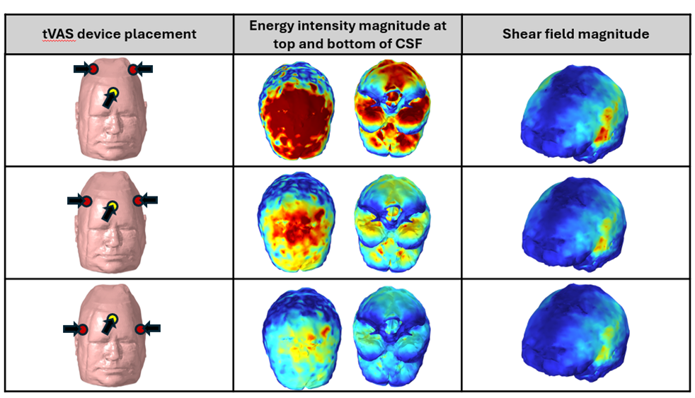

연구 · Brain
알츠하이머 치료법의 하나로 ‘진동 자극’이 주목받고 있습니다. 우리는 사람 머리 FE 모델과 다중물리 해석으로 진동 자극이 뇌 조직과 뇌척수액(CSF)에 어떻게 전달되는지, 어느 위치를 자극해야 효과적인지를 시뮬레이션합니다. 비침습적 뇌 치료의 설계 근거를 만드는 연구입니다.
자극 위치와 조합을 바꿔가며 뇌 안으로 전달되는 진동 에너지를 비교합니다.



뇌를 감싼 뇌척수액의 유동과 압력을 다중물리 기법으로 해석합니다.

